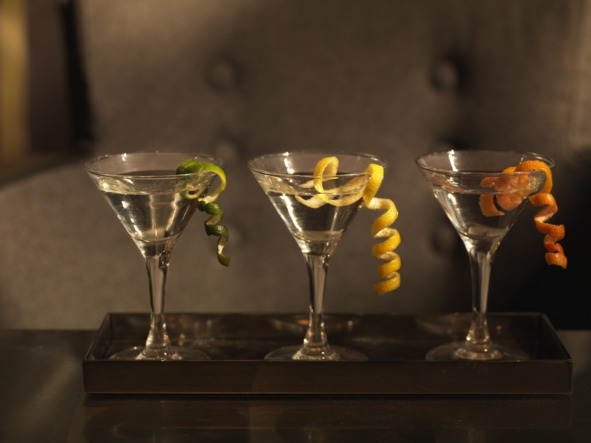

О культуре пития .. Как пить вермут.. ..


Температура подачи, бокалы, выбор закуски и соков зависит от вида вермута.
1. Bianco. «Бьянко» правильно подавать в конусообразной коктейльной рюмке на длинной ножке (второе название – бокалы для мартини) охлажденным до 12—15° C или со льдом (замороженными фруктами: клубникой, вишней, дыней, ананасом). При более высокой температуре у напитка появляется излишняя горечь и резкий запах полыни. Слишком сильно охлажденный белый вермут «замораживает» язык, в результате уникальный вкус теряется. Если напиток подают со льдом или соком, можно использовать любые бокалы объемом 120—250 мл (наполнять максимум на ?).
Главное не пить вермут из рюмок и стопок, предназначенных для крепкого спиртного, это считается моветоном.
«Бьянко» сочетается с легкими солеными закусками и фруктами. Классикой считаются твердые сорта сыра и соленые крекеры. Более сытный вариант – бутерброды с белым хлебом, сыром и ветчиной. Из фруктов лучше выбрать апельсины, ананасы, киви, клубнику. Иногда белый вермут закусывают арахисом, фундуком, фисташками и миндалем, но орехи забивают рецепторы языка, и вкус чувствуется не так ярко. Эстеты пьют «бьянко» с оливкой или маринованной коктейльной луковичкой, смотрится это красиво, однако вкус нравится на всем.

Бокал для вермута, второе название – коктейльная рюмка
Для снижения сладости и крепости белый вермут разбавляют кислым соком (апельсиновым, грейпфрутовым, лимонным, яблочным). Классическая пропорция – 1:1, но можно добавить больше сока. В последнее время стало модным смешивать «бьянко» с нектарами, например персиковым или соком манго, получаются очень сладкие сочетания, которые подходят разве что для десерта.
2. Rosso. «Россо» пьют охлажденным до 10—12° C. Другой метод – добавить лед или замороженные фрукты (вишню, черешню, клубнику) прямо в бокал. В чистом виде мужчинам подают красный вермут в низких квадратных или шестигранных стаканах с толстым дном, женщинам – в коктейльных рюмках с соломинкой или без. Бокал наполняют максимум на две трети объема. «Россо» относится сразу к двум категориям: аперитивам и дижестивам, поэтому его можно ставить на стол перед приемом пищи, наслаждаться на протяжении всей вечеринки (фуршета) как единственным алкогольным напитком или подать на десерт.
Красный вермут хорошо сочетается с фруктами (апельсины, клубника, вишня, лимон), оливками, твердыми сырами, солеными орешками и крекерами. Иногда к «Россо» подают бутерброды из белого хлеба с кусочками лосося или канапе из сыра, ананаса и салата.
«Россо» разбавляют негазированной минеральной водой, вишневым, гранатовым, грейпфрутовым или апельсиновым соком. Классические пропорции – 1:1 или 1:2 (одна часть вермута к двум частям сока).
3. Rose. Промежуточный вид, с которым хорошо сочетаются закуски, подходящие к красным и белым вермутам. Лучший вариант для подачи – коктейльные рюмки, винные бокалы или стаканы для виски с толстым дном. Вкус оптимально раскрывается при температуре 10—12° C. В качестве оригинальной закуски подойдут фаршированные лимоном оливки, горький шоколад, сыр, овощи гриль, свежие зеленые овощи, а также салями и куриное мясо.
Розовый вермут разбавляют вишневым, апельсиновым, гранатовым или грейпфрутовым соком в пропорции 1:2 или 1:3.
4. Dry и Bitter. Сухой вермут принято пить как аперитив в чистом виде охлажденным до 8—10° C из коктейльных рюмок или стаканов с толстым дном. «Драй» хорошо сочетается с маслинами, оливками и твердыми сортами сыра. Любителям сытных закусок рекомендовано подавать к сухому вермуту бутерброды с лососем, красной рыбой и ветчиной. Еще один неплохой вариант – любые салаты без майонеза.
«Биттер» пьют в чистом виде сильно охлажденным (3—5° C) с высококалорийной закуской. Выбор бокалов зависит от крепости: чем выше содержание спирта, тем меньше объем. К таким напиткам можно подавать любые блюда, сочетающиеся с крепким алкоголем. Например, вареный картофель, жареное мясо, рыбу и салаты.
5. Сладкий вермут. Является классическим дижестивом. К этому виду относятся красные, розовые и белые вермуты с высоким содержанием сахара (больше 15%). Их лучше закусывать не очень сладкими десертными блюдами: горьким шоколадом, мороженым, фруктами и ягодами. Считается, что к этим вермутам хорошо подходят конфеты и торты, но из-за высокой сладости сочетание получается слишком приторным и полностью заглушает вкус вермута.